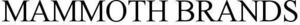

Trade Mark Journal No.2025/037 12 September 2025
WO0000001856968 (3,8)
Office of origin: United States of America
Date of International Registration:19 April 2025
Date of designation in the UK:
19 April 2025

International priority date claimed: 25 November 2024
(Jamaica)
(0093643)
- Class 3
- Shaving preparations; shaving lotions; shaving creams; shaving foams; pre-shaving preparations, namely, shaving oils; shaving gels; shaving mousse; pre-shaving preparations; post-shaving preparations; after-shave; aftershave creams; aftershave lotions and balms; non-medicated serums for calming the skin after waxing body hair; non-medicated skin care preparations; skin cleansers; non-medicated soaps; bar soap, namely, body cleansing soap; cream soap, namely body cleansing soap; liquid bath soap, namely, body cleansing soap; bar soap, namely, cleansing bars; body cleansers and moisturizers, namely, body wash and body moisturizers; body creams; body powder; body scrub; body sprays; body lotion; skin moisturizers; skin lotions; facial scrubs; facial cleanser; face creams; eye care products, namely, eye cream; pre-moistened cosmetic towelettes; tissues impregnated with cosmetic lotions; cosmetic preparations for removing nail polish; hair removing cream; fragrances; deodorant for personal use; antiperspirants; non-medicated sun care preparations; sunscreen preparations; after sun preparations in the nature of after-sun gels, after-sun lotions, after-sun milks, and after-sun oils; suntanning preparations; self-tanning preparations; non-medicated lip balm; cosmetics; hand creams; hair care preparations; hair styling preparations; facial hair styling preparations; depilatories; depilatory creams; hair removing cream in the nature of facial hair removal cream; hair removing cream in the nature of body hair removal cream; disposable wipes impregnated with cleansing chemicals or compounds for personal hygiene use; essential oils; bath preparations, bath salts and balms, other than for medical purposes; skincare kits comprised of depilatories and applicators, namely, cosmetic balls, cosmetic pads, cosmetic cotton sticks, cosmetic cotton puffs and cosmetic cotton swabs; skin lotions and skin moisturizing gels for relieving razor burns, razor bumps and ingrown hairs; non-medicated acne soap, namely, acne body wash, acne cleanser, and acne face cleanser not for medical purposes; moisturizing preparations for the skin, namely, pubic moisturizers; body wash in the nature of pubic wash; breath freshening sprays; breath freshening strips; preparations for cleaning dentures; dental bleaching gels; dentifrices; denture polishes; non-medicated mouth washes; biotechnological cleaning solution for eliminating odors, breaking down organics, and removing stains; biotechnological chemical and spray cleaners for industrial and household applications such as stain removal, odor elimination, and bioremediation of many types of organic and hydrocarbon-based materials; laundry detergents; laundry preparations, namely, washing preparations; laundry glaze; laundry soaking preparations, namely, laundry pre-soak; soap for brightening textile; laundry bleaching preparations; blueing for laundry; laundry wax; fabric softeners for laundry use; stain removers; cleaning preparations for household use; carpet cleaners with deodorizer; air fragrancing preparations; cloths impregnated with a detergent for cleaning; wipes impregnated with a cleaning preparation, namely, a detergent for cleaning; detergents other than for use in manufacturing operations and for medical purposes, namely, for household use.
- Class 8
- Razors; razor blades; hand-held facial razors; non-electric razors; shaving blades; dispensers, cassettes, holders, handles, and cartridges all specifically designed for and containing razor blades, and structural parts therefor; manicure implements, namely, nail files, nail clippers, cuticle pushers, tweezers, nail and cuticle scissors; nail tweezers; eyebrow tweezers; shaving stands especially adapted for holding razors; stands especially adapted for holding shaving razors; shaving cases, sold empty; disposable and non-disposable devices for dermaplaning, namely, razors; disposable and non-disposable facial razors; disposable razors.
Mammoth Brands Inc.
Representative: Carissa L. Weiss Law Office of Carissa L. Weiss, PLLC, 745 Fifth Avenue, Suite 500, New York NY 10151, UNITED STATES OF AMERICA